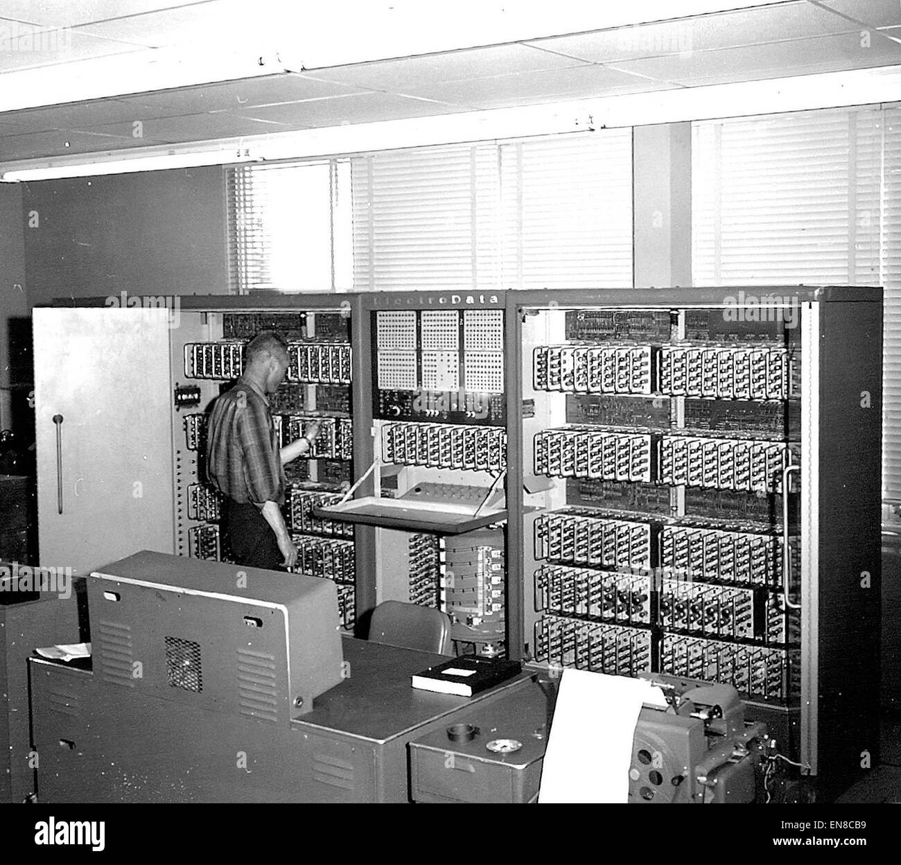
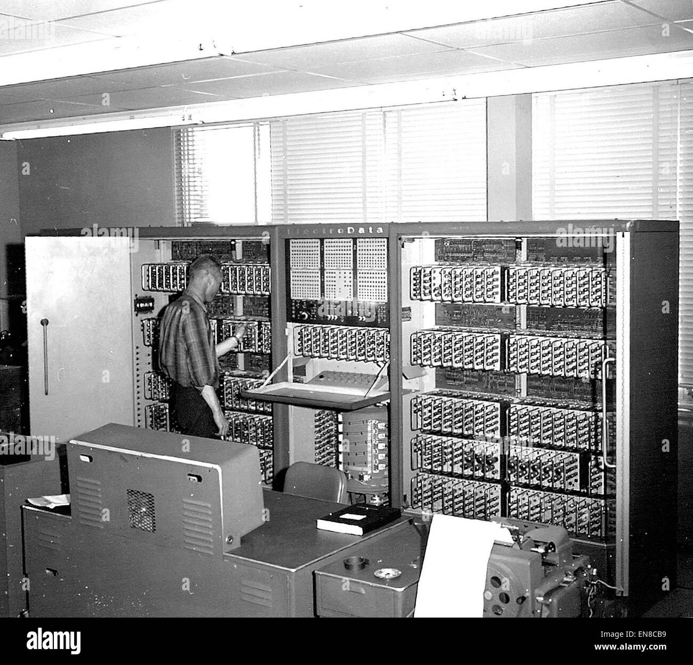

Krótka Historia
Komputer to elektroniczna maszyna cyfrowa, maszyna matematyczna maszyna przeznaczona do przetwarzania informacji, które da się zapisać w formie ciągu cyfr albo sygnału ciągłego. Maszyna roku tygodnika „Time” w 1982 roku.
Mimo że mechaniczne maszyny liczące istniały od wielu stuleci, komputery w sensie współczesnym pojawiły się dopiero w połowie XX wieku, gdy zbudowano pierwsze komputery elektroniczne. Miały one rozmiary sporych pomieszczeń i zużywały kilkaset razy więcej energii niż współczesne komputery osobiste (PC), a jednocześnie miały miliardy razy mniejszą moc obliczeniową. Współcześnie są prowadzone także badania nad komputerami biologicznymi i optycznymi.
Małe komputery mogą zmieścić się nawet w zegarku i są zasilane baterią. Komputery osobiste stały się symbolem ery informatycznej. Najliczniejszymi maszynami liczącymi są systemy wbudowane sterujące najróżniejszymi urządzeniami od odtwarzaczy MP3 i zabawek po roboty przemysłowe. Na mojej stronie postaram sie przedstawić historię komputerów.